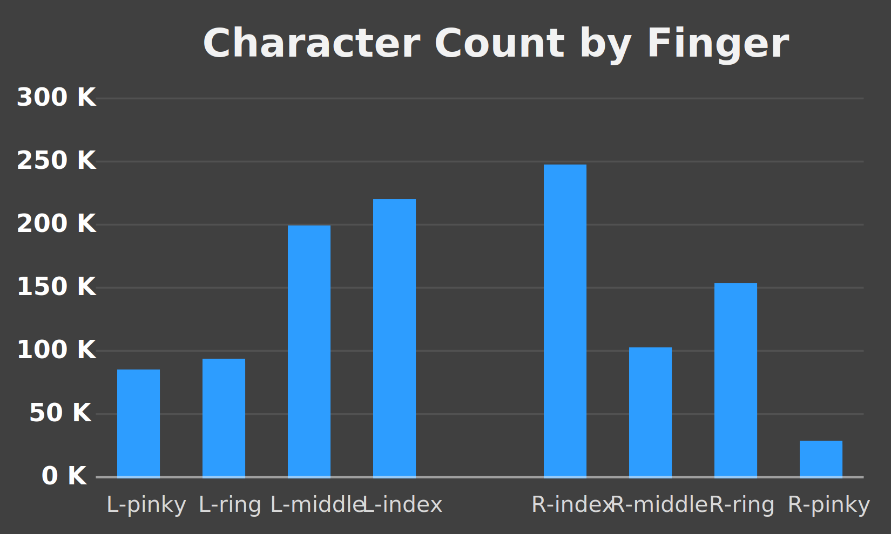
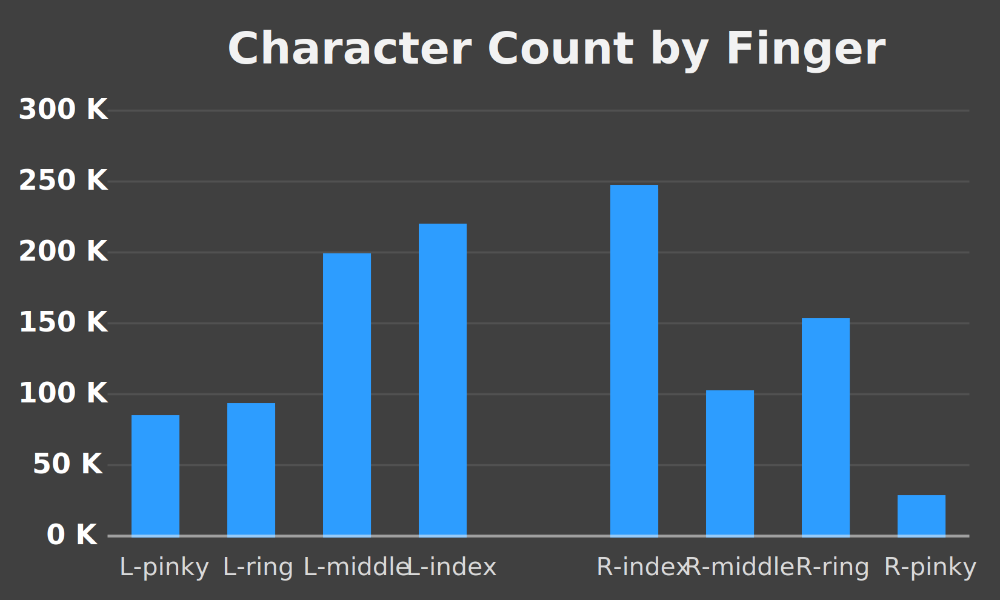

Introduction
This project is an extension and refinement of my first typeracer analysis. While the subject matter is the same, the scope is much more concise: a review of the words and characters encountered in my first 5000 typeraces.
To set expectations here are the Wikipedia links to the most common words and letters in english text. Additionally, I stumbled upon this analysis by Peter Norvig. It is a brief and fascinating example of quantitative linguistics that is somewhat relevant to my project.
Section 1: Characters
From 5,000 races and 261,271 words I extracted 1,389,073 characters.
The tableau chart embedded below lets you compare character categories. You can change how the data is sorted (ascending, descending, alphabetical) with the button on the vertical axis beside "Count."
Character handedness was categorized based on my tendencies. I omitted spacebar, as it was highly dominant and an arguably ambidextrous key (although I almost exclusively use my left thumb). Unsurprisingly, the index fingers do the most work as they are "responsible" for a larger set of characters. R-pinky also has a lot of responsibility, but those characters are seldom used.
 

Lastly I wanted to see the correlation each letter had with word length. Half of this report could be on the boxplot below, but a lengthy write up is hard to justify. I will include a few remarks however.
- All letters had a median word length of 6, 7, or 8.
- All of the outliers at 28 or 29 are due to the two longest words: antidisestablishmentarianism and floccinaucinihilipilification. There were 17 unique letters between these two words.
- "a" and "i" are the only letters that are also 1-length words. Moreover, "a" had a much tighter spread than "i."
- The biggest loser was "j." It is tied with "k" for having the smallest median word length of 6, but it also has no words longer than 13 characters.

Section 2: Words
First and foremost I will be pretty flexible in what constitutes a word. For the most part, any discrete string of text will be considered a word. Words are words, nominalizations are words, numbers are words, abbreviations are words, typos and slang are also words. This relates to the data collection process which is described in section 3.
From 5,000 races I extracted 261,271 words; 13,354 (or about 5%) of which were unique.
The top 74 unique words hold a cumulative 130,716 occurrences. Meaning 0.55% of the unique words account for 50% of all words typed.
Average word length among all words is skewed low because short length words are far more common. The 3 longest words shown below are hardly even words by conventional standards.

My favorite part of this project was investigating word and character handedness. Handedness referring to the ability to type with one hand, or on one side of the keyboard. This measure is slightly problematic since "b" and "6" may be ambidextrous, among other concerns. I categorized my data according to my personal tendencies, and ignored numeric characters for this part.


Section 3: The Process
I'd like to use this section to explain the steps of this project at a high level. All my code and data can be found on this repository.
After finishing the very long winded 5,000 Typeraces project I had several more ideas on the topic that I could not justify including. The scope was already too large, and I learned enough from that first attempt to try something new.
My first step was to acquire the raw text from all 5,000 races. This was a great opportunity to learn basic webscraping. Initially I tried to scrape the text from the official typeracer website, but it was over 10x faster to get it from typeracerdata.com. This is not surprising at all in hindsight.
There was surprisingly little data cleaning to be done. There were exactly 2 texts that were formatted like poems (including line breaks), but they were easily recognized and managed.
Slightly more annoying was properly dividing the raw texts into words. From the beginning I knew this would be impossible to perfect. Abbreviations, deliberate typos, slang, numbers, and obscure proper nouns were most of the problem. Here are some examples of problematic phrases
- U.S.A
- 'don't'
- there're
- N'yn
- 3-2-1
- -5e-324
- 7976931348623157e308
I thought those last two were bugs until I found out they were indeed from this race. Words surrounded by apostrophes were not uncommon, and they were not easily distinguished from legitimate words starting or ending with an apostrophe. I did not toil over this seemly endless problem for too long. Instead, I let RegEx split words as simply as it could, and then I added some catches for those that slipped through the cracks. Unfortunately, this meant U.S.A would be split into U, S, and A, but I do not believe it had a significant impact on these results. Besides, there is an argument to be made on how U.S.A or -5e-324 should be categorized to begin with.
Now I had dictionaries with all the typeracer data I would need. My other scripts helped to extract, transform, and organize it to be usable in Excel and Tableau. There's some outputs that didn't get used at all. For example, I counted capitalized letters before I transformed everything to lowercase, and about 25% of all alphabetical letters were capitalized!
In hindsight, the #1 thing I would change would be to add category fields to the characters and words. If they were categorized as ambidextrous, left, or right, I could have done such analysis better, cleaner, and faster.